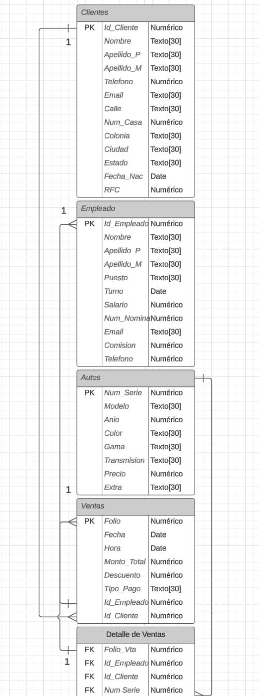
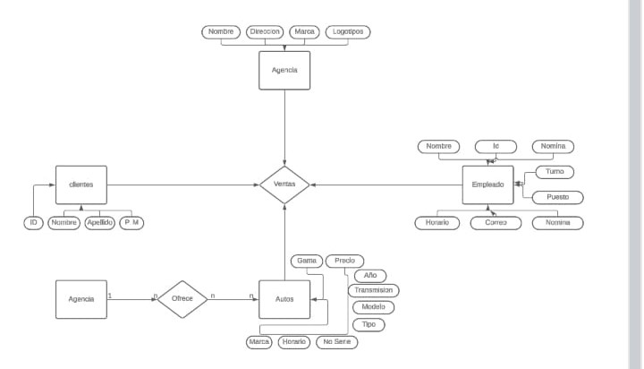

PRACTICA 1: Ventas de Autos Volkswagen
Definición de Problema:
La empresa de Volkswagen solicita un programa en el que sus empleados puedan acceder a las compras realizadas por cada cliente, además podrá conocer el catalogo de autos que están disponibles junto con toda su información.
Diagrama ER

Diagrama Racional
